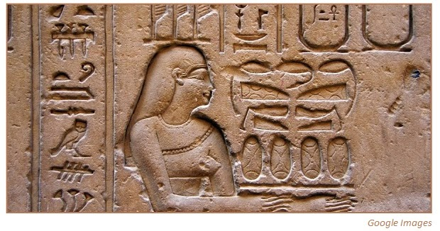

Merit-Ptah
Conhecida como a primeira mulher cientista e médica da história no Antigo Egito. Ela simboliza o início da contribuição feminina na ciência e na medicina diagnóstica.

Hypatia de Alexandria
Filósofa, astrônoma e matemática. Ela inventou o astrolábio plano e o hidrômetro, instrumentos essenciais para a navegação e ciência da época.

Ada Lovelace
A visionária que escreveu o primeiro algoritmo para ser processado por uma máquina, tornando-se a primeira programadora do mundo.

Sarah E. Goode
Inventou a cama de armário (cama dobrável), otimizando espaços em casas pequenas. Foi uma das primeiras mulheres negras a receber uma patente nos EUA.

Josephine Cochrane
Inventou a primeira máquina de lavar louça mecânica de sucesso, projetada para lavar os pratos sem quebrá-los.

Margaret Knight
Inventou a máquina que corta e cola sacos de papel com fundo quadrado, como os que usamos em mercados hoje. Ela teve que lutar na justiça para provar que uma mulher era capaz de entender de engenharia!

Marie Curie
Pioneira no estudo da radioatividade e única pessoa a ganhar dois prêmios Nobel em áreas científicas diferentes.

Mary Anderson
Ao observar um motorista tendo que descer do carro na neve para limpar o vidro, ela inventou o limpador de para-brisa manual. Na época, as empresas acharam que isso "distrairia os motoristas".

Madam C.J. Walker
Inventou uma linha de produtos especializados para cabelos e tornou-se a primeira mulher negra a ser milionária por esforço próprio nos EUA.

Beulah Louise Henry
Conhecida como "Lady Edison", ela teve 110 invenções, incluindo uma máquina de escrever que fazia cópias em carbono, um guarda-chuva com capas trocáveis e máquinas de costura sem bobina.

Antonieta de Barros
Invenção do Dia do Professor, Antonieta de Barros, Natural de Florianópolis, a primeira deputada negra do Brasil criou a Lei nº 145/1948, que instituiu o Dia do Professor e o feriado escolar em Santa Catarina, modelo que depois se expandiu para o país.

Hedy Lamarr
Inventou o sistema de comunicações que é a base para o Wi-Fi e GPS modernos. Uma mente brilhante além das telas de cinema.

Grace Hopper
Criou a primeira linguagem de programação complexa (COBOL) e o termo "bug" para erros de computador.

Marion Donovan
Cansada de lavar lençóis, ela usou uma cortina de chuveiro para criar a primeira capa de fralda impermeável, que não vazava. Foi o primeiro passo para a fralda descartável moderna.

Rosalind Franklin
Sua fotografia de raio-X foi fundamental para descobrir a estrutura em dupla hélice do DNA.

Stephanie Kwolek
Química que descobriu o Kevlar, material usado em coletes à prova de balas e cabos submarinos.

Margaret Hamilton
Liderou a equipe que criou o software de navegação para a missão Apollo 11, que levou o homem à Lua.

Dra. Patricia Bath
Médica oftalmologista que inventou a sonda Laserphaco para tratar a catarata. Ela foi a primeira médica afro-americana a receber uma patente médica, devolvendo a visão a milhares de pessoas.

Katie Bouman
Cientista da computação que liderou o desenvolvimento do algoritmo que capturou a primeira imagem de um Buraco Negro.

Jennifer Doudna e Emmanuelle Charpentier
Inventaram a ferramenta de edição genética CRISPR-Cas9, que permite "recortar e colar" partes do DNA para tratar doenças.

Gitanjali Rao
Aos 11 anos, inventou o "Tethys", um dispositivo barato que detecta chumbo na água potável usando nanotubos de carbono.

O Futuro é Delas
A linha do tempo não para aqui. Milhares de meninas ao redor do mundo estão inventando soluções para o clima, medicina e tecnologia agora mesmo.